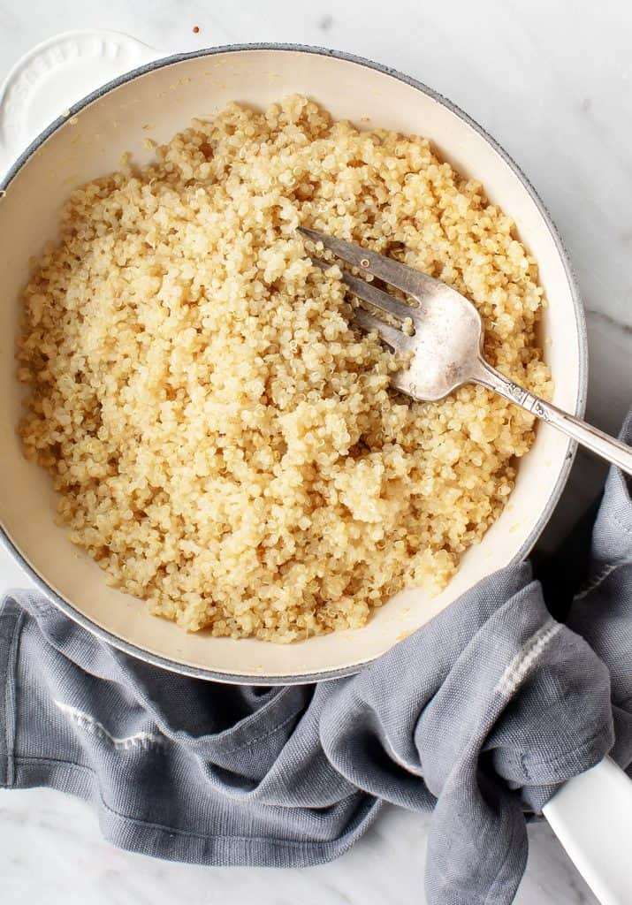

Quinoa

Description
This is a simple recipe to prepare quinoa in a rice cooker.
Ingredients
- 1lbs dry quinoa
- 4.5cups water
- 1tbsp olive oil
- Optional: salt, garlic powder, bay leaf
Steps
- Rinse and drain quinoa
- Put quinoa in rice cooker and fill with 4.5cups of water
- Add olive oil
- Add any desired seasonings
- Cook in rice cooker with regular settings for white rice